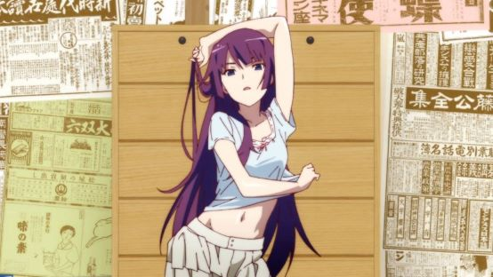

Contact
Op AnimeNewsNetwork zijn we bereikbaar via telefoon, e-mail en WhatsApp. Heb je een vraag over onze site of heeft u suggesties, laat gauw een recensie achter of contacteer ons (wij reageren het meest op E-mail).
Algemene vragen
Telefoon receptie: 030 – 28 15 100 (Bereik ons ook op AnimeNewsNetwork@yahoo.com) Twitter: @UmbraPlayerXD


Laten weten wie JOUW favoriete waifu is, of welk anime JOUW favoriete anime is?
Reageer hieronder in de forum en laat weten wie jullie favoriete zijn!
Laat eventueel ook weten hoe oud ze zijn, voor peaceful purposes
Top 3 anime girls tot zover:
Nummer 1:
Zero Two, (darling in the Franxx)
Nummer 2:
Nummer 3: